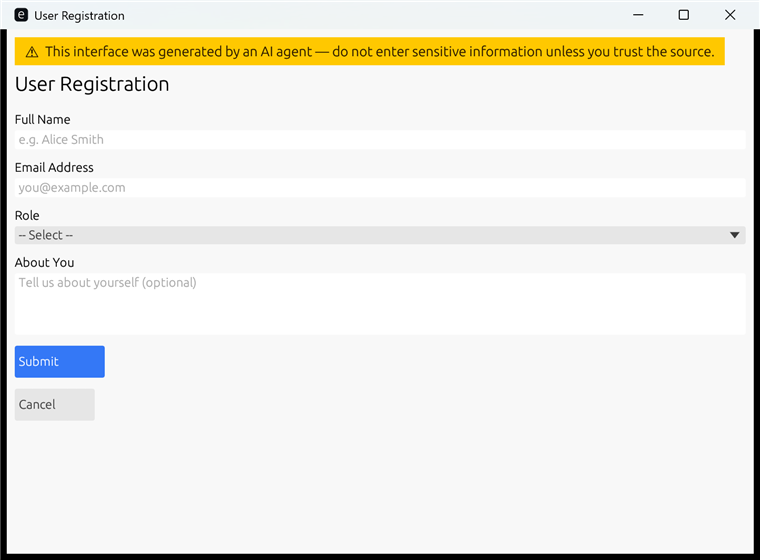
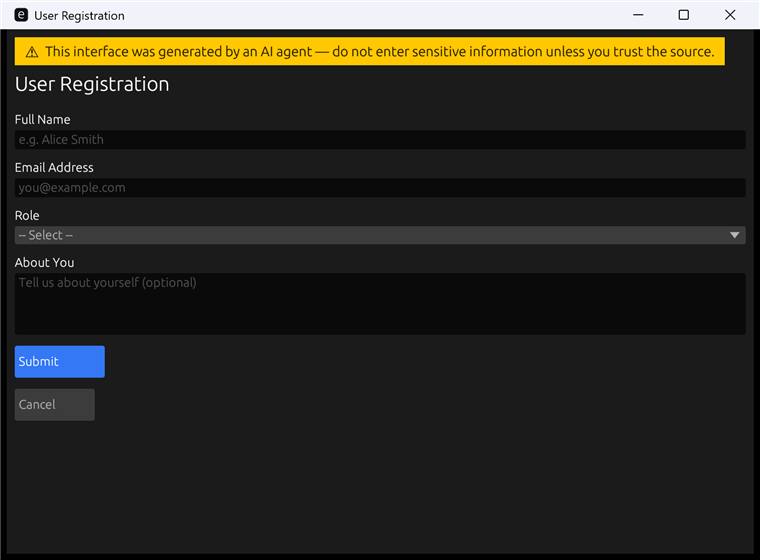

Native Generative UI for AI agents.
Human-in-the-loop input collection via native OS forms —
one JSON in, one native window, one JSON out. No server, no browser, no chat loop.
Light and dark themes — with the built-in multilingual AI-generated UI security warning.


Agents asking humans questions one at a time is painfully inefficient.
Agent asks a question → user types → agent asks next question → user types…
10 fields = 10 round-trips. Breaks context windows. Loses state on reconnect.
Agent generates one JSON form spec → user fills everything at once → agent gets all answers in one structured response.
10 fields = 1 round-trip. Works offline. No server required.
Four complementary protocols — each for a different layer of agent interaction.
| Layer | Protocol | Purpose |
|---|---|---|
| Agent ↔ Tools & Data | MCP | Gives agents access to tools, files, APIs |
| Agent ↔ Agent | A2A | Agent-to-agent coordination |
| Agent ↔ Web UI | AG-UI | Streaming, real-time agent↔browser integration |
| Agent ↔ Generative UI | A2UI (Google) | Declarative JSON UI for web / Flutter rendering |
| Agent ↔ Native Desktop | a2native | Sync form collection via native OS windows |
Everything an agent needs to gather structured human input.
Text fields, dropdowns, sliders, file pickers, radio groups, checkboxes, markdown, images, cards and more.
UUID-keyed long-lifecycle windows. The same window updates across multiple agent turns — no flicker, no re-spawn.
Dark mode and custom accent colours via theme in the JSON spec.
Auto-close windows after N seconds with timeout. Result status becomes "timeout".
Single static binary. No Node, no Python, no browser engine. Ships as one executable file.
Every window permanently shows an amber AI-generated warning. Cannot be suppressed by the form spec.
Pause agent execution, hand control to the user for structured input, then resume — without breaking the agent pipeline.
Inspired by agent-browser's client-daemon pattern: the window lives, the agent turns are short.
# Turn 1 — opens the window (daemon spawns in background)
echo '{"title":"Wizard 1/3","components":[...]}' | a2n --session abc123
# → {"status":"submitted","values":{...}}
# Turn 2 — same window, new form (no new window spawned)
echo '{"title":"Wizard 2/3","components":[...]}' | a2n --session abc123
# Turn 3 — final step
echo '{"title":"Wizard 3/3","components":[...]}' | a2n --session abc123
# Close the window
a2n --close abc123a2native auto-detects the format from the input JSON.
Natively accepts Google A2UI v0.8+
surfaceUpdate /
beginRendering JSONL.
Emits A2UI userAction output.
Any agent SDK built for Google A2UI can drive a2native with no adaptation.
// Input — Google A2UI JSONL
{"surfaceUpdate":{"surfaceId":"form1","components":[
{"id":"env","component":{"MultipleChoice":{
"options":[{"label":{"literalString":"Production"},"value":"prod"}],
"maxAllowedSelections":1,"variant":"dropdown"}}},
{"id":"lbl","component":{"Text":{"text":{"literalString":"Deploy"}}}},
{"id":"btn","component":{"Button":{"child":"lbl","action":{"name":"submit"}}}}
]}}
// Output — A2UI userAction
{"userAction":{"name":"submit","surfaceId":"form1","sourceComponentId":"btn",
"timestamp":"2026-01-01T12:00:00Z","context":{"env":"prod"}}}
a2native's own simpler format. Auto-detected when input lacks
surfaceUpdate.
JSON Schema ↗
· a2n schema
// Input — a2native legacy
{
"title": "Deploy to production",
"timeout": 60,
"theme": { "dark_mode": true, "accent_color": "#6C63FF" },
"components": [
{ "id": "env", "type": "dropdown", "label": "Environment",
"options": [
{ "value": "prod", "label": "Production" },
{ "value": "stag", "label": "Staging" }
]},
{ "id": "ok", "type": "button", "label": "Deploy", "action": "submit" }
]
}
// Output — a2native legacy
{ "status": "submitted", "values": { "env": "prod" } }| Component | Output type | Notes |
|---|---|---|
| text-field | string | Single-line text |
| textarea | string | Multi-line text, 4 rows default |
| number-input | number | Drag value with optional min/max/step |
| dropdown | string | ComboBox, value from options list |
| checkbox | boolean | Single toggle |
| checkbox-group | string[] | Multiple selection |
| radio-group | string | Exclusive selection |
| slider | number | Range slider, default 0–100 |
| date-picker | string | YYYY-MM-DD text field |
| time-picker | string | HH:MM text field |
| file-upload | string | Native file dialog; paths joined by ; |
| button | — | submit / cancel / custom actions |
| card | — | Bordered group, nests any components |
| text / markdown / image / divider | — | Display only |
a2native is called by AI agents automatically. Understand the risks.
The banner above appears at the top of every a2native window. It cannot be hidden by the form spec.
A compromised agent could mimic a trusted UI (fake password dialog, fake bank login).
Malicious agents can ask for passwords or API keys and exfiltrate them.
Markdown components allow arbitrary text. Attackers can craft convincing deceptive messages.
Guessable session UUIDs can be exploited by other processes on the same machine.
timeout values.
Never enter passwords or private keys into a2native forms.
Build from source or download a pre-built binary.
# Build from source
git clone https://github.com/a2native/a2native.git
cd a2native
cargo build --release
# Show help (also shown when there is no JSON arg and no stdin pipe)
./target/release/a2n help
# Print the a2native input JSON Schema
./target/release/a2n schema
# One-shot: JSON as inline argument
./target/release/a2n '{"components":[{"id":"n","type":"text-field","label":"Name"}]}'
# One-shot: JSON from stdin
echo '{"components":[{"id":"n","type":"text-field","label":"Name"}]}' | ./target/release/a2n
# Multi-turn session
echo '{"title":"Step 1","components":[...]}' | a2n --session "$(uuidgen)"